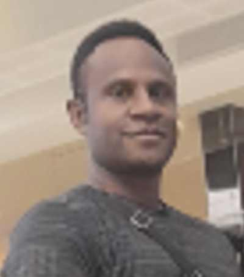

Otto Jefferson Supris | WDD130
Hello! My name is Otto Jefferson Supris and I am from Papua New Guinea. I enjoy studying online with the BYU Pathway Program. I have learned so much and I am so grateful for this program. Through BYU Pathway I have come to realize my what i'm worth in the eyes of Our Heavenly Father and His Jesus Christ. I joined this program as a non member but as I do my work and listen to the Leaders and apostles of Christ speaks, really had an impact in my life and I know that I was not alone in this life and that gave me confident to pursue my dream regardless. I have learned some basic principles that really helped me in my personal life experience and help to know the importance of tithing, time management and to be faithfull in the Gospel.